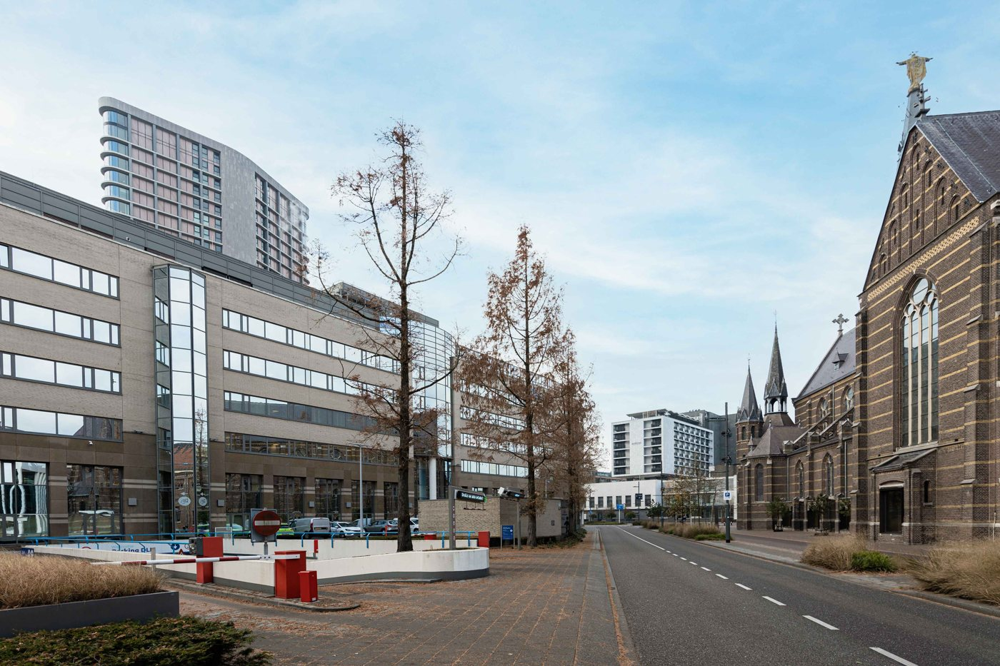

Tot nu toe
Vanaf 2027
Kleur
Drie paletten, twintig blauwen
Eén tokenbestand, met CMYK en RAL erbij
Hoofdknop
Direct reserveren
2,46 : 1, haalt de norm niet
Reserveer je plek
6,87 : 1
Letter
Parkeer voordelig
Parkeer
voordelig.
Garage
0
Verloop, wit op aqua (2,34 : 1)
0
Vlak navy, bubbel met navy cijfer (4,80 : 1)
Mensen
Poppetjes

Echte plekken en mensen, in foto